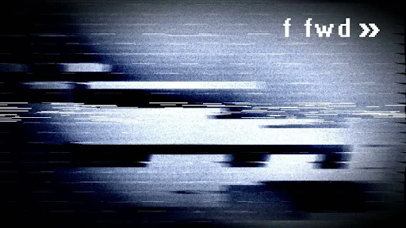

Where did the name The Bread Pirate come from?
Short Answer: It’s a reference to the “The Dread Pirate Roberts” from The Princess Bride.
Fun Answer: I earned the title for my exploits in the Spanish Main! I plundered so many grain shipments that they dubbed me The Bread Pirate. To this day, I wear it as a badge of honor.
Real Answer: I became a huge fan of The Princess Bride after my mom forced me to watch it in 2015. From then on I was a Princess Bride apostle. I read the unabridged book twice (it was really hard to find a copy), watched all the behind the scenes footage, made videos about it, and became the biggest Princess Bride fan ever.
Okay, now fast forward. Pretend we’re doing that thing with the VHS Tape where it actually speeds up…
In June 2016, me and some friends created a new Terraria world with the intent of making a let's play series (Terraria is a side-scrolling video game and is similar to Minecraft.). We needed usernames and even though I already had a username (Major Burton Wester) I decided to use something different. I went with The Dread Pirate -- the name of the notorious pirate captain from The Princess Bride.
Hey, you got the name wrong! It’s supposed to be Bread, not Dread!
What the heck? How did you get into my FAQ?
Oh, well you left the door unlocked so I thought I’d walk in.
That was very rude of you. Knock next time.
Okay... sorry.
Anyways, I typed in the name The Dread Pirate and customized my character. But as I was customizing my character, I noticed a typo. I had used a B instead of a D in the word Dread!
Thus, I accidentally created the name “The Bread Pirate!”
See! Didn’t I tell you it was supposed to be Bread!
Yes. You’re very smart. Now shut up.
As I was saying... I thought the name was funny, so I went online to see if the username was already taken. It wasn’t. So, in the middle of our recording, I declared that my new username was The Bread Pirate.
Sadly, the let's play was never published and I didn’t have the foresight to save the footage, so we’ll just have to go by word of mouth.